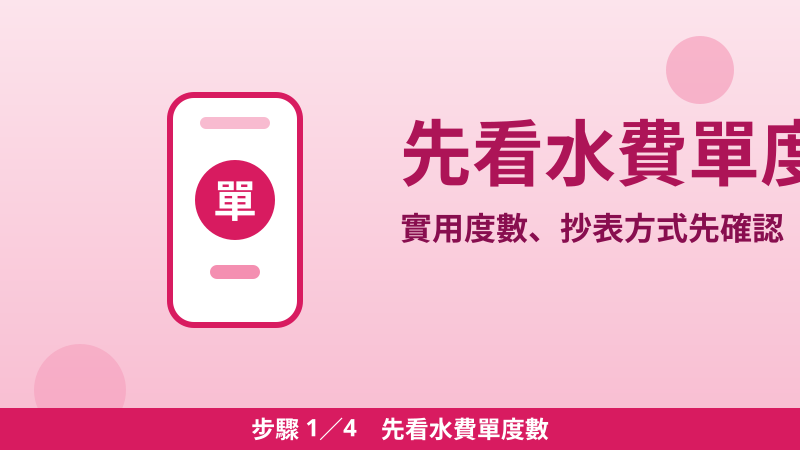
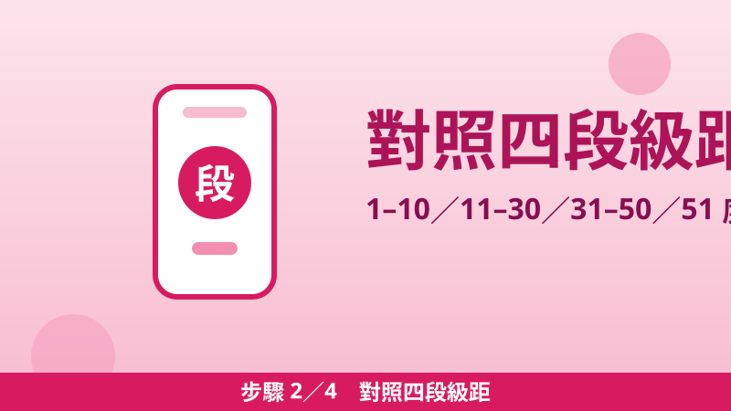
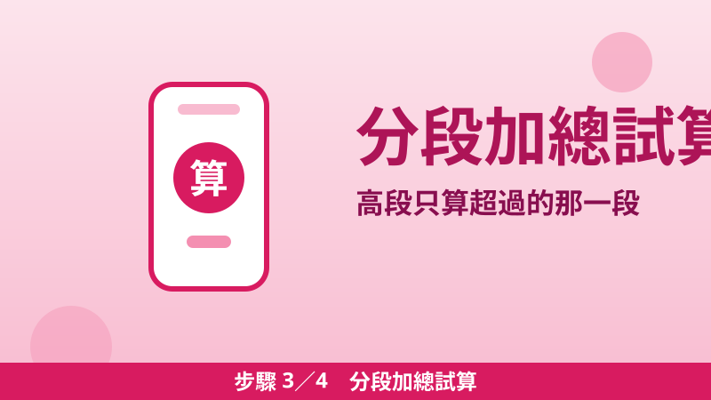
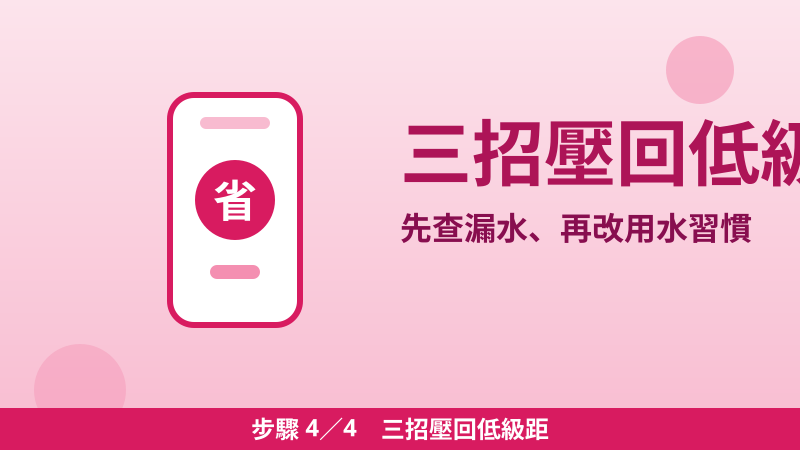

水費級距怎麼算才省？台水四段單價＋三個試算，超過的那段最貴
水費跟電費一樣，都是分段累進：用得越多，超過級距的那一段單價越貴。只是水費一期通常只有幾百元，很多人從來不看級距，漏水、用水習慣浪費都沒感覺。看懂水費單其實只要三件事：度數落在哪一段、基本費多少、帳單上還有哪些代徵費用。本文以台灣自來水公司（台水）的費率為準；臺北市由臺北自來水事業處供水，費率與級距不同，不要直接套用本文數字。
7.35／9.45／11.55／12.075 元／度
水費單由三部分組成
- 基本費：依水表口徑計收，跟用多少水無關。最常見的 13 公厘水表，每月抄表基本費 17.85 元、隔月抄表 35.7 元；口徑越大基本費越高。
- 用水費：依實際度數分段累進計算。算法是「每一段的度數 × 該段單價，再全部加起來」；台水速算表則用「最高段單價 × 總度數 − 累進差額」得到同一個數字。
- 代徵費用：台水受託代收的費用，例如清除處理費、污水處理費、水源保育與回饋費，項目與費率依各地委託單位公告而不同，不在本文試算內。
所以「用水費＋基本費」不等於帳單總額，實際應繳金額還要加上代徵費用，總水費計收至元為止、角以下四捨五入。
四段級距表（台水一般用水）
| 段別 | 每月抄表度數 | 每度單價（含稅） | 累進差額 |
|---|---|---|---|
| 第一段 | 1–10 度 | 7.35 元 | 0 元 |
| 第二段 | 11–30 度 | 9.45 元 | 21 元 |
| 第三段 | 31–50 度 | 11.55 元 | 84 元 |
| 第四段 | 51 度以上 | 12.075 元 | 110.25 元 |
如果你家是隔月抄表（兩個月抄一次），級距與差額都要加倍：1–20 度、21–60 度、61–100 度、101 度以上，累進差額分別為 0、42、168、220.5 元，基本費也以隔月標準計收。看帳單時先確認自己是每月還是隔月抄表，級距才不會對錯。
三個試算：分段加總，一眼看懂
以下皆以每月抄表、13 公厘水表（基本費 17.85 元）試算，金額為「用水費＋基本費」，未含代徵費用；實際帳單以台水開立為準。
- 試算一（20 度）：10 × 7.35＋10 × 9.45＝73.5＋94.5＝168 元用水費，加基本費 17.85 元，合計 185.85 元。
- 試算二（40 度）：10 × 7.35＋20 × 9.45＋10 × 11.55＝73.5＋189＋115.5＝378 元用水費，加基本費 17.85 元，合計 395.85 元。
- 試算三（60 度）：10 × 7.35＋20 × 9.45＋20 × 11.55＋10 × 12.075＝73.5＋189＋231＋120.75＝614.25 元用水費，加基本費 17.85 元，合計 632.1 元。
看試算就知道關鍵：從 40 度用到 60 度，多用的 20 度裡有 10 度落在最貴的第四段；想省水費，不必斤斤計較每一度，先把總度數壓回較低的級距，省下的都是最貴的那一段。
四步驟：從看懂帳單到壓回低級距

步驟 1先看水費單度數
找出帳單上的「實用度數」與抄表方式（每月或隔月）。度數就是這期用了幾度水，抄表方式決定要用哪一張級距表。

步驟 2對照四段級距
每月抄表：1–10 度 7.35 元、11–30 度 9.45 元、31–50 度 11.55 元、51 度以上 12.075 元。先看度數落在哪一段，再看離下一段還差幾度。

步驟 3分段加總試算
每一段的度數乘以該段單價再加總，最後加基本費（13 公厘每月 17.85 元）。也可以用速算式：最高段單價 × 總度數 − 累進差額，結果相同。

步驟 4三招壓回低級距
先查漏水、再把洗衣集中一次洗、淋浴與洗手時減少空流水。目標不是一滴不漏，而是把總度數壓回較便宜的級距。
省水三招：先查漏水最重要
- 第一招：查漏水。水費突然暴增，第一個要懷疑的不是漲價，而是漏水。把家裡所有水龍頭、洗衣機、馬桶進水都關掉，去看水表指針是否還在轉；還在轉就代表管線或馬桶可能在漏，找水電檢查比省水習慣更優先。
- 第二招：洗衣集中洗。洗衣機無論半桶還是滿桶，用水量差異有限；把衣物累積到接近滿載再洗，洗的次數少了，總度數自然下降。
- 第三招：減少空流水。刷牙、洗臉、抹肥皂時先關水龍頭，淋浴時先把水量調到夠用就好。這些習慣不花錢、不換設備，長期下來最能把度數穩定在低級距。
📎 資料來源
- 台灣自來水公司「本公司目前水費及各項服務費收費標準」（四段單價、每月／隔月級距、累進差額、基本費、用水費公式與代徵費用說明）：water.gov.tw
最後查證日期：2026-11-02
免責聲明：本文僅供參考，費率與級距以台灣自來水公司官方最新公告為準；試算為本站依官方費率表分段計算，未含代徵費用，實際帳單金額以台水開立為準。